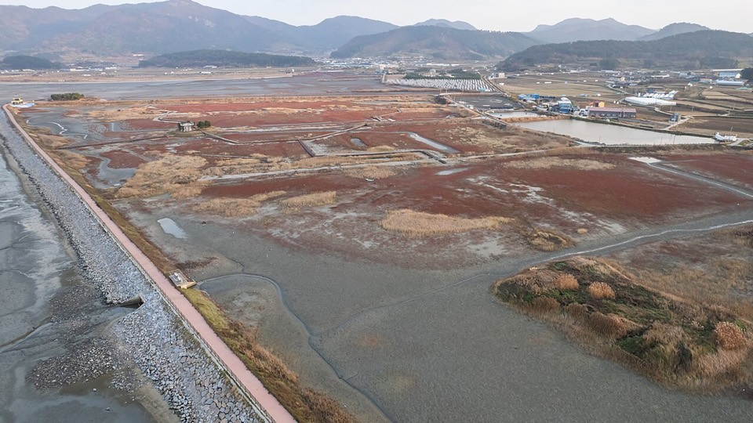

고창갯벌(세계자연유산 「한국의 갯벌」). 사진: 국가유산청(옛 문화재청), 공공누리 제1유형 — 위키미디어 공용 「Gochang tidal flat 02.jpg」. 다녀온 뒤 현장 사진으로 바꿉니다.
사업 개요
| 일정 | 2026년 11월 26일(목) ~ 27일(금), 1박 2일 |
|---|---|
| 장소 | 고창갯벌(람사르고창갯벌센터·만돌마을 갯벌), 고창 운곡람사르습지, 전북생태관광육성지원센터(전주) |
| 참여 | 제주특별자치도 생태관광지원센터, 전북생태관광육성지원센터, 고창군 생태관광주민 사회적협동조합(사례 청취, 협의 중) |
| 주관 | 제주특별자치도 생태관광지원센터 |
| 상태 | 준비 중 — 다녀온 뒤 답사 기록과 협의 결과를 이 페이지에 정리합니다. |
왜 가나요
- 전북의 지원 체계 배우기
전북은 '1시·군 1생태관광지' 육성과 생태관광육성지원센터를 통해 생태관광지와 천리길을 하나로 묶어 지원·홍보하고 있습니다.
- 2027년 홍보 준비
제주센터는 2027년 도내 생태관광지역과 프로그램의 소개·홍보를 중점으로 준비하고 있어, 광역 센터 간 운영 사례를 비교하고 협력 체계를 만들고자 합니다.
무엇을 하나요
1일차 · 11월 26일(목) 고창 현장
- 세계자연유산 고창갯벌 — 람사르고창갯벌센터 전시·전망대, 갯벌 전기차 탐방(생태안내인 해설)
- 국가생태관광지역 고창 운곡람사르습지 — 탐방열차와 습지 탐방로
- 주민 운영조직 사례 듣기 — 고창군 생태관광주민 사회적협동조합(협의 중)
2일차 · 11월 27일(금) 전북생태관광육성지원센터 교류 미팅
- 두 센터 사업 소개 — 운영 구조, 주요 사업, 2027년 계획
- 의제별 협의 — 생태관광지·시군과의 협력 / 홍보 채널과 콘텐츠(홈페이지, 스탬프투어, 예약 연계) / 협력 제안
협력 제안(안)
- 상호 방문 프로그램
제주의 연안·해양과 전북의 숲·습지·걷기길을 잇습니다.
- 광역 센터 정례 협의
두 센터가 정기적으로 만나 사업을 나눕니다.
- 홍보 콘텐츠 함께 만들기
홍보 콘텐츠를 공동 제작하고 서로 알립니다.
- 노하우 교류
다국어 콘텐츠와 예약·스탬프투어 운영 경험을 나눕니다.
준비 현황
- 방문 계획 수립, 일정 확정(11월 26~27일)
- 이동 예약
- 현장 사례 청취 협의 중
- 다녀온 뒤 — 답사 기록과 협의 결과를 이 페이지에 정리
다녀온 뒤 올릴 것
현장 사진·짧은 영상, 교류 미팅 합의사항과 후속 일정
출처
- 사업 내용: 2026 전북 생태관광 교류방문 계획(안), 제주특별자치도 생태관광지원센터
- 사진: 국가유산청(옛 문화재청), 공공누리 제1유형 — 위키미디어 공용